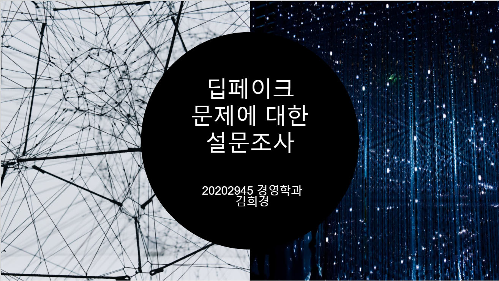

경영&디지털인문예술
Home
목차
소개
전공:경영학과
복수전공: 디지털인문예술전공(DAH)
작업물
이미지영상창작
<기하학적, 비재현적인 그래픽, 일러스트, 디지털 드로잉>
<작품명: 고민거리>
작품설명: 고민거리도 많고 생각할 것이 많았는데, 그런 나의 내면을 작업에 담았다.
무질서하고 정돈되지 않는 모습이 꼭 지금의 나와 같아 제목을 '고민거리'로 지었다.
디지털인문예술입문
<구글 설문을 이용한 설문조사>

딥페이크 문제에 대한 설문조사 ppt